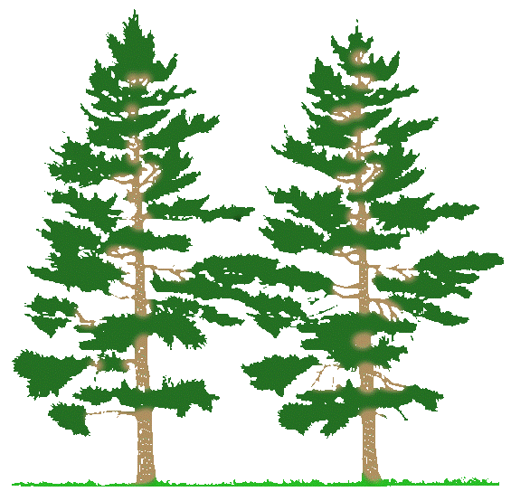

Click the icons to see Fun Facts!
Tallulah Gorge
Multiple movies, including Avengers: Infinity War
Has 6 waterfalls known collectively as Tallulah Falls
One of Georgia’s Seven Natural Wonders

Chattahoochee National Forest
867,000 acres of outdoor recreation
Contains 2200 miles of rivers
Home to Georgia’s highest point
Red Top Mountain
Is home to 12000 acre Lake Altoona
Red soil comes from being rich in iron
15 miles of trails through the forest
Lake Lanier
Is 26 miles long with 692 miles of shoreline
More than 200 feet deep at some parts
Chosen as the rowing/canoeing/kayaking venue for the 1996 Olympics
Atlanta, GA
One of the top 10 largest metropolitan areas in the US
Hosted the Summer Olympics in 1996
$385 Billion economy is in top 20 of the world
Augusta, GA
Established in 1736
Was twice named as the state capital of Georgia
Declaration of Independence signers buried here: George Walton & Lyman Hall
Warm Springs, GA
Was originally called Bullochville
The springs are thought to have therapeutic properties
FDR lived in Warm Springs in “The Little White House”
Macon, GA
Called “The Heart of Georgia” because of proximity to geometric center
City Hall served as temporary state capitol in 1864
Known for its annual Cherry Blossom Festival
Chattahoochee River
Was of strategic importance during the Civil War
430 miles long
1993 song “Chattahoochee” won both Single and Song of the Year
Savannah, GA
Established in 1733 – oldest city in GA
Hosted sailing competition for 1996 Olympics
Home to Pirate’s House – a tavern in the downtown area
Providence Canyon
One of Georgia’s Seven Natural Wonders
Also called Georgia’s Little Grand Canyon
Home of the rare Plumleaf Azalea
Radium Springs
So-called because the water contains trace amounts of radium
The water remains a constant 68 F year-round
One of Georgia’s Seven Natural Wonders
Okefenokee Swamp
One of Georgia’s Seven Natural Wonders
Largest blackwater swamp in North America
The swamp was formed by 6500 years of peat accumulation in the basin